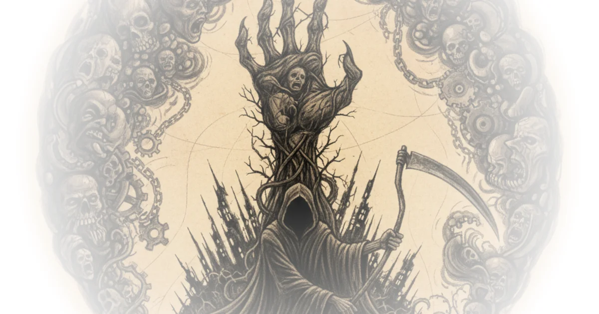

Tom van der Linden argues that our most terrifying modern nightmares are not external invasions, but the grotesque, self-inflicted mutations of our own creation. By tracing the psychological lineage from the medieval Black Death to the atomic age, the piece reveals how specific, visceral images—swollen lymph nodes and mushroom clouds—do more than document disaster; they fundamentally rewire our collective sense of safety and reality. This is a crucial intervention for a moment when existential dread feels ubiquitous, offering a historical map of how humanity learns to fear the very tools it builds to survive.
The Architecture of Existential Terror
Van der Linden begins by dismantling the distance we feel from historical catastrophes, noting that while we know the statistics, we struggle to grasp the psychological rupture. He writes, "it's hard to really grasp just how profoundly impactful this pandemic was not just as a catastrophe that ravaged a society but also as an irrevocable force that fundamentally changed the collective human psyche." The author uses the sheer scale of mortality in the Middle Ages—where local death tolls reached 90%—to illustrate a collapse of the divine order. When the clergy could not administer last rights, the fear shifted from physical death to eternal damnation, creating a "feeling of apocalyptic dread that humanity wouldn't really experience again until the atomic age."

This framing is effective because it establishes a direct line between the plague's physical symptoms and the nuclear age's psychological scars. The author suggests that the specific imagery of the plague, particularly the buboes or swellings, served as a biological anchor for fear. As van der Linden explains, the visual of the "nasty swelling of the lymph nodes" invoked a "direct aversion" that helped people instinctively understand contagion before they understood the science. This historical parallel sets the stage for his central thesis: that our modern fears are not abstract, but are anchored in specific, grotesque visual symbols.
The images connecting with major social and psychological forces have exerted a strange and powerful pressure on our history.
The Mushroom Cloud as a Modern Myth
The commentary then pivots to the atomic bomb, arguing that the weapon's existence felt immediately "transgressive," a revelation of secrets that should have remained hidden. Van der Linden quotes Spencer Weir to highlight how the bomb became a singular entity in the public imagination: "people don't often speak of atomic bombs plural as if they're just part of a nation's weaponry rather they refer to the atomic bomb or simply the bomb capitalized like a mythical Demi God." This linguistic shift is not merely semantic; it reflects a deep-seated cultural recognition that the weapon represents a violation of natural law.
The author dissects why the "mushroom cloud" became the defining symbol of the era, rejecting other descriptors like "cauliflower" or "jellyfish." Drawing on scholar RG Wasson, van der Linden posits that the mushroom resonates on a gut level because it is associated with "dark and musty places" and "rotten wooden logs," yet it also represents a "rebirth that transcends that simple binary between death and life." This duality captures the essence of the atomic age: a force of destruction that simultaneously promises a terrifying transformation of the world. The argument is compelling because it moves beyond the immediate horror of the blast to the long-term, mutating nature of radiation.
Critics might note that focusing so heavily on American cinema and Western symbolism risks overlooking the distinct, trauma-informed responses of nations like Japan, where the imagery of the bomb was not just a mythic symbol but a lived, immediate reality of incineration. However, van der Linden's focus on the psychological processing of the threat in the West remains a vital lens for understanding global cultural anxiety.
Monsters as Mirrors of Our Own Making
The piece reaches its most provocative point when analyzing the explosion of 1950s monster movies. Van der Linden argues that creatures like the giant ants in Them! or the radioactive blob in The Thing were not just random scares but visualizations of the "irreversible threshold" humanity had crossed. He writes, "The creatures introduced a new and peculiarly horrible imagery of their own... a psychologist would later come to understand we explained the images we see... aren't just associated in our brains with other images or ideas but also with emotions that physiologically connect them to the body."
This is the core of the author's insight: these monsters filled a "vacuum space" where people felt a fear they could not yet articulate. The grotesque, inhuman nature of these creatures reflected the "contamination of the natural order" caused by nuclear testing. Unlike earlier monsters like Frankenstein's creation, which were tragic, these new beasts were "altogether inhuman" and devoid of feeling, representing a force that could not be reasoned with. The author suggests that defeating these monsters in film allowed audiences to "vicariously reclaim some power in the face of a force against which they felt helpless otherwise."
The analysis of On the Beach further cements this, describing a world where the apocalypse is not a sudden explosion but a slow, creeping radioactive cloud. The film captures a "state of humanity in the face of imminent death" where the characters are "passively watching as the Doomsday Clock moved closer." This shift from active terror to passive resignation is a chilling commentary on the normalization of extinction risk.
It was the realization of having crossed an irreversible threshold of having opened a Pandora's Box that unleashed unto the world the strong force of nuclear power.
Bottom Line
Van der Linden's strongest contribution is the demonstration that our fears are not just reactions to events, but are constructed and sustained by the specific images we allow to dominate our culture. The piece's greatest vulnerability lies in its heavy reliance on film and literature as the primary evidence of public sentiment, which may overlook the quieter, more pragmatic anxieties of the average citizen. Nevertheless, the argument that we are haunted by the "monsters we've created" remains a powerful, necessary framework for understanding the unique texture of modern dread.